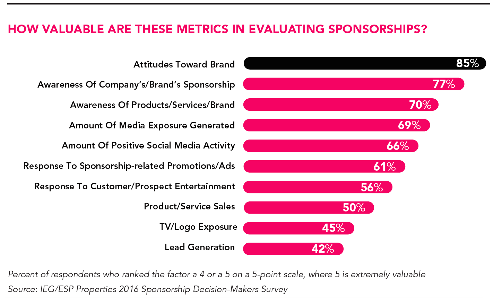

In order to secure a sponsorship, it is important to understand what's in it for the company. For a while there has been a gap between sponsors expectations and the properties' ability to deliver as it pertains to personalized marketing opportunities based on audience data, and valuable digital content and platforms (IEG, 2017).
Combined with the growing competition for sponsorships fueled by a steady increase in numbers of NGO, understanding the mindset of the prospective sponsor is imperative. There are a number of reasons why a company would want to pay an NGO with either a cash or kind sponsorship or both (Hollander, 2014).
Increase Brand Loyalty
It's more expensive for companies to recruit a new customer than to keep an existing one. Companies gladly pay large sums to achieve brand loyalty among their existing customer base. Satisfied and loyal customers tell others about their favorite brands. Brand loyalty is important more than ever due to the proliferation of information and myriad of consumer options. Sponsoring an NGO's properties and causes keeps the company's brand fresh and newsworthy and sends a signal to their loyal customers that the company cares about them and their community.
Awareness and Credibility
Being endorsed by an NGO display a company in a positive light. When an NGO endorses a brand, it creates more credibility than traditional media, where the public knows that the company purchased its own advertising. Brands with extensive portfolios might need to promote different divisions. The company Citybank has a lesser known division, Women & Company, who teaches females about financial literacy. In order to attract women business owners to this division Citybank might sponsor an NGO that advocates women empowerment and independence.
Change or Reinforce Image
Some companies need a change in their public image. They may be older brands that want to become more relevant, they may have been in some kind of scandal or some external circumstance creates new opportunities. In light of the recent focus on human created climate changes, Audi might want to develop cars that are more environmental friendly, so it makes sense for them to sponsor an NGO that are well known for their fight against climate changes.
Identification with a Particular Lifestyle
Aside from image, companies want to be associated with certain lifestyles. There are certain companies who want to be associated with "success" such as luxury cars, beverages, hotels, and watches. Their customers wear or consume these products as a way to show the world that they "made it". Other companies want to identify with middle-market consumers and signal that their products and services are affordable. By sponsoring your NGO, they can help their brand being associated with a lifestyle based on factors such as youth, adventure, affluence or family value.
Other Sponsorship Articles
What is a Corporate Sponsorship?
Approaching a Prospective Sponsor
The Sponsor Proposal
Measurable Things to Give a Sponsor?
Grow Their Customer Base
Companies are always looking for more customers and clients, no matter their size. There are a bunch of reasons why customers stop purchasing, which include buying from competitors, lower disposable income, not needing the product or service anymore etc. Your NGO who caters to the company's target segment is a good place to acquire new customers.
Drive Retail Traffic
A specific way your NGO can assist a company in growing their customer base is by directing people to their stores – online as well as their brick and mortar shop. This can be done by giving the company exposure, publicity campaigns, contests, product reviews, product sampling, and couponing to the NGO's audience.
Change or Reinforce Image
Some companies need a change in their public image. They may be older brands that want to become more relevant, they may have been in some kind of scandal or some external circumstance creates new opportunities. In light of the recent focus on human created climate changes, Audi might want to develop cars that are more environmental friendly, so it makes sense for them to sponsor an NGO that are well known for their fight against climate changes.

Direct Connections with Your Target Market
As already mentioned companies has a strong motivation to connect their brands with your NGO's target market. When your NGO approaches a company for a sponsorship there is no such thing as telling too much about your target demographic. If the target market is growing or has purchasing power your NGO becomes exponentially attractive. It's important to think about creative ways that a company can engage with your NGO's target audience and to do extensively research beforehand. Again, highlighting the markets purchasing power, strengths, buying habits, and trends cannot be overstated.
Accessing a Desirable Geographic Territory
Some companies are looking to make geographic expansions and opening up shops in new territories. In such cases they might be looking for an NGO that resides in that area or an NGO who can throw a sponsored event in that area. It is a good practice yout NGO to ask potential sponsors if they are planning to penetrate the area where you reside.
Showcase Community Responsibility
People has become political consumers meaning that they care about a company's ethics. In order words, people like to buy from companies that gives back to the community, and sponsorship is a way for a company to show people that they are committed to the community. People buy with their emotions and a sponsorship connects brands with real people and noble causes that highlights the humanity of the company. Most people don't have time to volunteer for their favorite charities, so "armchair philanthropy" is getting more popular. People can help their community and causes through the companies they support.
Entertain Clients
When your NGO host an event you can offer your sponsors hospitality privileges for their clients, such as private lounges, special hosts, preferred seating, meet and greets, autographed books, gift bags, etc. After the event, the sponsors' special clients can receive thank you notes and a special gift. The list is endless. This is a way for the company to build a strong and valuable relationship with their important clients.
Recruit and Retain Employees
It's extremely important for companies to getting and keeping talented employees. In order to achieve that goal, they can use your NGO's property as an employee perk. Top performers are incentivized by sending them to business conferences, sports events, entertainment, restaurants, talks and special events. Sometimes companies don't want or have the means to create their own non-profit event or people to deliver a compelling speeches.
To be on Your Advisory Board and Connect with Influential Leaders
Companies love to connect with people who are influential in business, politics, and the community. It is very important for an NGO to have these kind of people on their advisory board because they attract sponsors.
Drive Sales
This is the most important of all the reasons why a company want to sponsor an NGO. Companies need to get ROI (return on investment). Companies need to make sales so they can stay in business and remain competitive. Your NGO need to figure out what a potential sponsors profit centers are and show the company that a sponsorship will add to their bottom line. "Show them how to follow the green so you can follow your dream" (Hollander, 2014).
In order for NGO's to secure a sponsorship it's important to understand which criteria's companies are basing their decision on in terms of who they are going to sponsor. Asking the following 10 questions is a way to get a better idea of what goes into the company's decision-making (Candelaria, 2011):
Does the sponsorship match the company values and the market they are trying to reach?
Will this gain the company exposure to new customers within their target market?
How much media exposure will the company receive and how does that compare to their media buys?
Is there a possibility for a multiyear agreement?
What values added items are the company given for making the NGO's dreams happen?
Who are some of the previous sponsors?
What is the track record of success for the NGO organization?
Would a competitor sponsor the event should the company decline?
What media exposure will there be?
Are there any celebrities or politicians affiliated with the event?